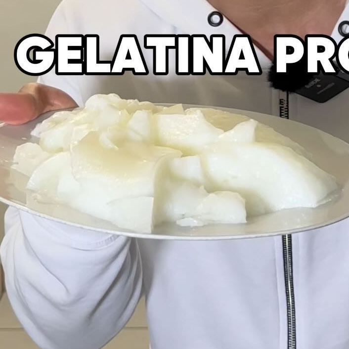

Gelatina Proteica (natural)
Ingredientes:
- Vaso Agua al clima
- 3 Sobre de gelatina sin sabor
- 170 g yogur griego
- 3 limones
- Stevia al gusto
Instrucciones:
- En el vaso de agua, añadir un sobre gelatina. Mezclar y dejar que se absorba un rato
- En otro bowl mezclar dos vasos de agua caliente con dos sobres de gelatina sin sabor y el yogur.
También exprimir 3 limones y añadir un poco de stevia.
- Mezclar todo muy bien, después mezclar todo con la gelatina del inicio
- Mandar al congelador 1 hrs o 5 hrs al refrigerador